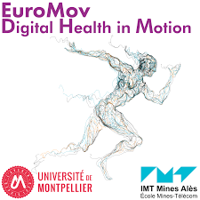
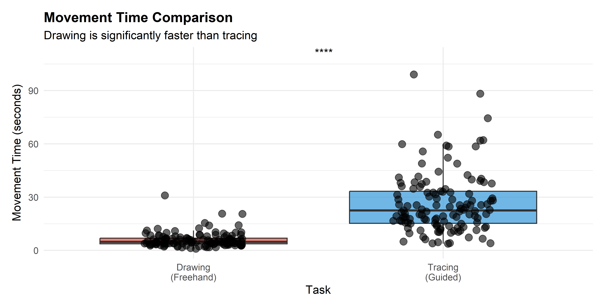
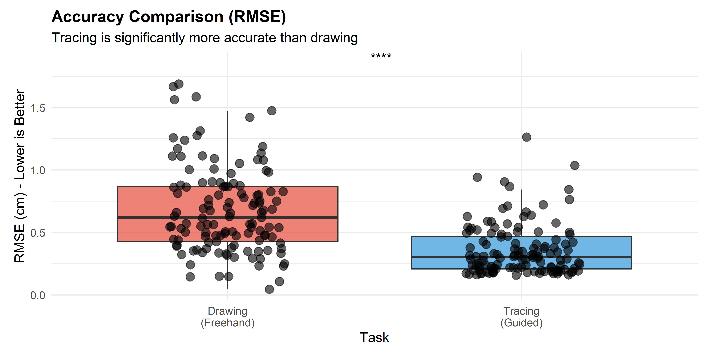
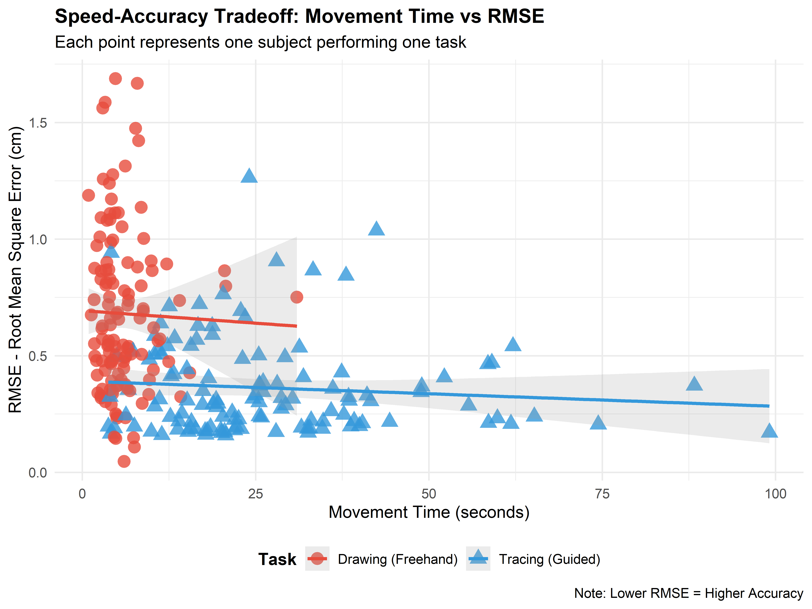
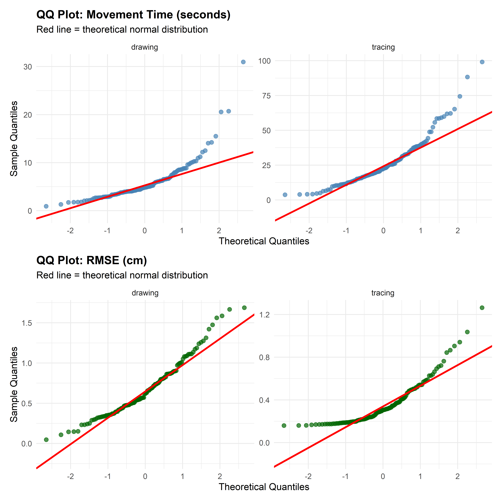

Tuba Tuba
Python-R-Git: Engineering and Ergonomics of Physical Activity
IDIL Graduate Program
Université de Montpellier — IMT Mines Alès
Supervisor: Denis MOTTET
GitHub Repository:
https://github.com/tuba1079/tuba.tuba
April 19, 2026

This study examines the speed-accuracy tradeoff in cyclic upper-limb movements by comparing internally guided (freehand drawing) and externally guided (tracing) tasks. Using data from 125 healthy participants performing 250 circular movement trials, we analyzed Movement Time (MT) and Root Mean Square Error (RMSE) as measures of execution speed and trajectory accuracy. Results demonstrated that drawing was significantly faster than tracing (M = 5.94 sec vs. M = 26.58 sec, p < 0.001), while tracing produced more accurate trajectories (M = 0.362 cm vs. M = 0.681 cm, p < 0.001). Critically, no significant within-task speed-accuracy correlation was detected in either condition (Drawing: ρ = −0.083, p = 0.358; Tracing: ρ = −0.056, p = 0.534). These findings suggest that task-inherent motor control strategies (feedforward vs. feedback) determine observed performance differences rather than fundamental speed-accuracy constraints operating within individual participants.
The analysis of human motor control helps explain how the central nervous system regulates movement under different task conditions. One key concept is the speed–accuracy tradeoff [2], which describes how faster movements often lead to lower accuracy due to limits in motor planning and execution.
In cyclic upper-limb movements such as circular drawing, this relationship depends on task context, particularly whether the movement is internally generated (drawing) or externally guided (tracing). Freehand drawing relies primarily on internal motor planning, whereas tracing tasks introduce external visual constraints that may enhance spatial accuracy but potentially increase execution time.
Research on motor learning demonstrates that movements without online visual feedback enhance feedforward control mechanisms [1], whereas feedback-based control relies on continuous visual guidance and online error correction [4]. This distinction between feedforward and feedback control strategies has implications for understanding task-dependent speed-accuracy relationships.
Research Question: In healthy adults performing circular hand movements, does faster execution come at the cost of reduced trajectory accuracy, and does this speed-accuracy tradeoff differ between internally guided (drawing) and externally guided (tracing) conditions?
To answer this question, two complementary metrics are analyzed:
Based on established motor control theory, the following hypotheses are tested:
This question is investigated using the open dataset associated with [3], which provides digitized x–y trajectories and timestamps for drawing and tracing tasks in healthy participants. The analysis combines Python-based data processing with R-based statistical testing and visualization.
Data were obtained from the open-access dataset linked to [3]. The dataset contains CSV files with planar movement signals (x, y) and task-specific time variables. The dataset includes 250 trials from 125 participants (125 drawing and 125 tracing trials). Trajectories were recorded using digitized pen coordinates with millimeter-level resolution. File names encode task type and participant information such as age, gender, and laterality.
Trajectory data were processed in Python (main.ipynb) using pandas, numpy, and scipy. The pipeline included:
Two main variables were extracted:
Coordinates were smoothed using a Savitzky–Golay filter to reduce noise. The centroid was computed as the mean position, and RMSE was calculated as the deviation of radii from the mean radius. This RMSE measure serves as an operational approximation of trajectory accuracy rather than a full geometric circle-fitting method. Velocity profiles were computed by differentiating position over time and normalizing movement duration (0–100%). These profiles provide additional insight into movement dynamics but are not used for hypothesis testing.
Task type (drawing vs. tracing) was identified from file names. This method is reliable due to consistent naming conventions in the dataset.
Statistical analysis was performed in R (main.Rmd).
Normality was assessed using QQ plots and Shapiro–Wilk tests. Results showed non-normal distributions for movement time (p < 0.05), supporting the use of non-parametric methods.
Drawing and tracing were compared using the Wilcoxon signed-rank test for paired data. Two directional tests were used:
Spearman correlations were computed separately for each task to test the speed–accuracy relationship.
Paired t-tests were also performed to confirm consistency of results across statistical methods.
| Hypothesis | Prediction | Result | Statistical Evidence |
|---|---|---|---|
| H1 | Drawing faster than tracing | SUPPORTED | Wilcoxon V = 0, p < 0.001 |
| H2 | Tracing more accurate than drawing | SUPPORTED | Wilcoxon V = 7042, p < 0.001 |
| H3 | Speed-accuracy tradeoff within tasks | NOT SUPPORTED | Drawing: ρ = −0.083, p = 0.358 Tracing: ρ = −0.056, p = 0.534 |
Drawing was significantly faster than tracing (H1 supported). The V statistic of 0 (meaning 0 out of 125 paired comparisons favor tracing) indicates near-universal speed advantage for drawing across the sample. The 4.5-fold difference demonstrates that feedforward-controlled movements (drawing) achieve substantially higher execution speed than feedback-controlled movements (tracing).

Tracing produced significantly more accurate trajectories than drawing (H2 supported). Drawing trajectories deviated approximately twice as far from ideal circle geometry compared to traced trajectories. The large V statistic (7042 out of ∼8000 possible comparisons favor tracing) indicates consistency of accuracy advantage across the sample. This dissociation—drawing faster but less accurate, tracing slower but more accurate—demonstrates the fundamental speed-accuracy tradeoff operating between task types.

| Task | Spearman ρ | p-value | Interpretation |
|---|---|---|---|
| Drawing | −0.083 | 0.358 | Not significant |
| Tracing | −0.056 | 0.534 | Not significant |
Neither task showed significant speed-accuracy correlation (H3 not supported). Within drawing movements, individual differences in movement speed did not predict corresponding accuracy changes (ρ = −0.083, p = 0.358). Similarly, within tracing, no significant correlation emerged (ρ = −0.056, p = 0.534). These weak, non-significant correlations indicate absence of within-task speed-accuracy tradeoff despite the robust between-task differences observed in H1 and H2.


Shapiro–Wilk tests indicated non-normal distributions for movement time (p < 0.05) but approximately normal distributions for RMSE. This heterogeneity justified the use of non-parametric Wilcoxon signed-rank tests for hypothesis testing. Robustness checks using parametric paired t-tests yielded identical p < 0.001 conclusions, confirming finding stability across statistical methods.
The dissociation between drawing and tracing—H1 and H2 supported, H3 not supported—shows that speed and accuracy differences reflect distinct motor control strategies rather than points along a continuous speed–accuracy continuum. Drawing relies on feedforward control and prioritizes rapid execution using preplanned motor commands based on internal representations. Tracing relies on feedback control and prioritizes spatial accuracy through continuous visual guidance and online correction.
Within-task analysis shows weak and non-significant correlations between movement time and RMSE in both conditions. Faster movements do not systematically reduce accuracy within drawing or tracing. Therefore, the classical speed–accuracy tradeoff does not appear at the individual performance level in this dataset. Instead, the tradeoff operates mainly between tasks rather than within tasks.
Analysis of 250 circular movement trials from 125 participants demonstrates that task type (internally-guided drawing vs. externally-guided tracing) fundamentally structures speed-accuracy relationships. Drawing achieves a 4.5-fold speed advantage at the cost of 88% higher accuracy error compared to tracing. Critically, this between-task dissociation does not reflect a within-task speed-accuracy tradeoff, suggesting that task-inherent motor control mechanisms determine the observed differences rather than fundamental motor constraints.